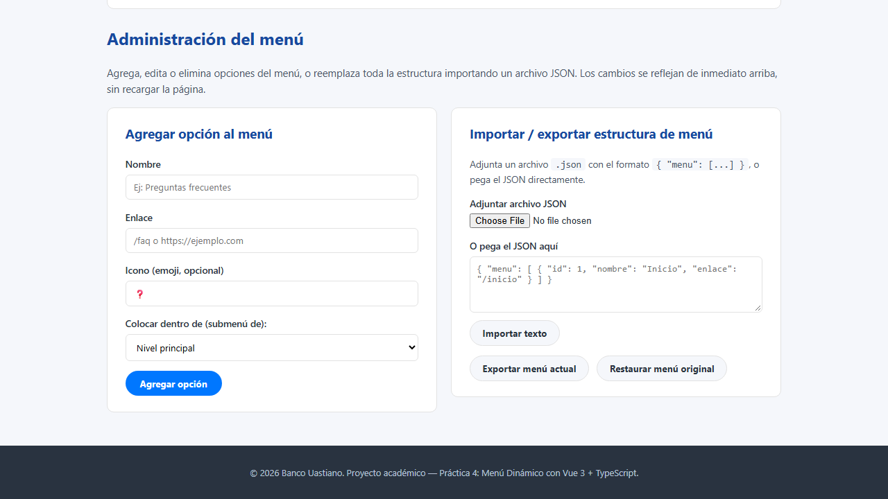
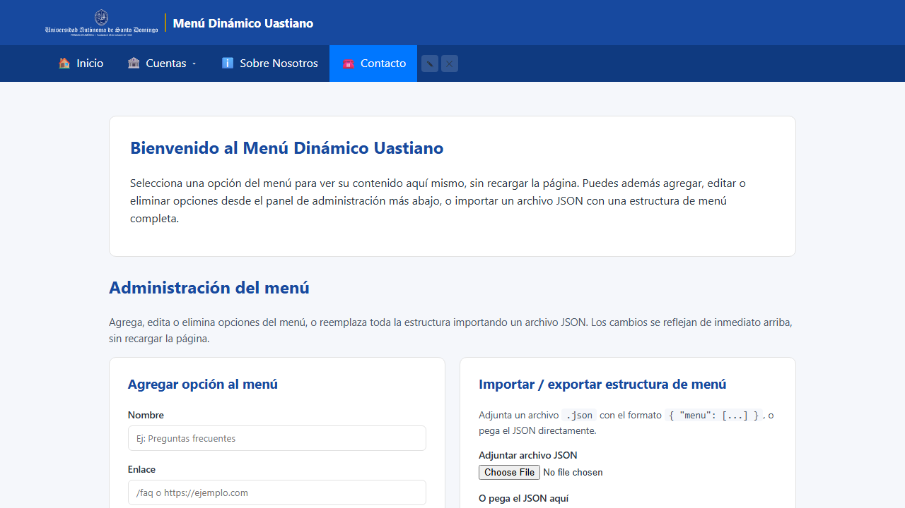
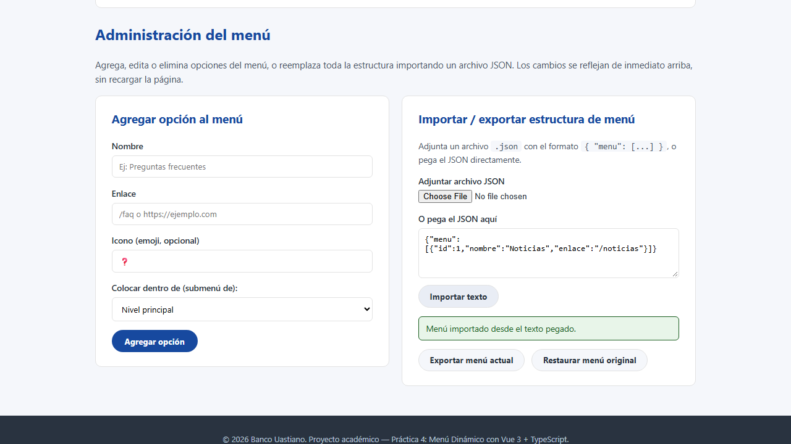
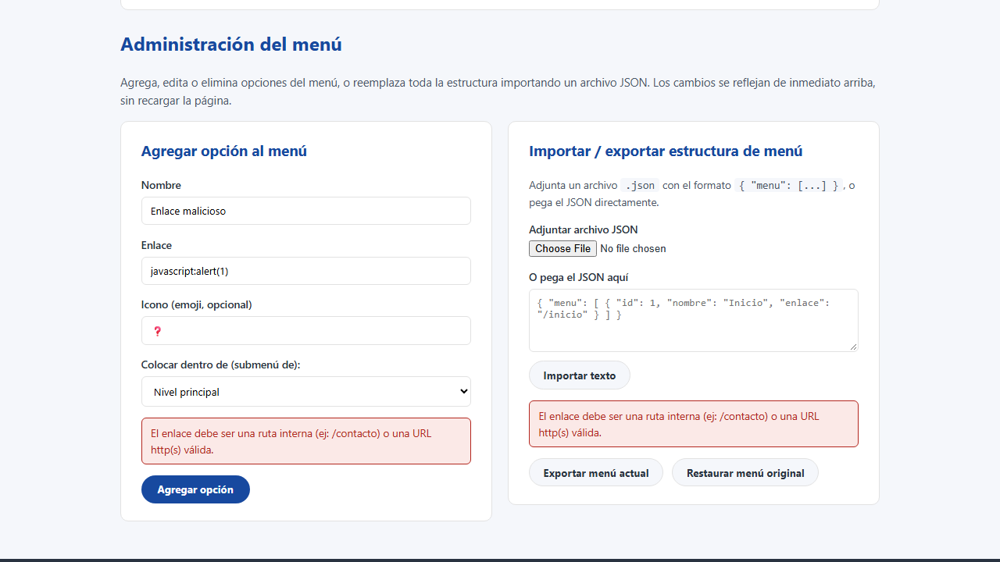
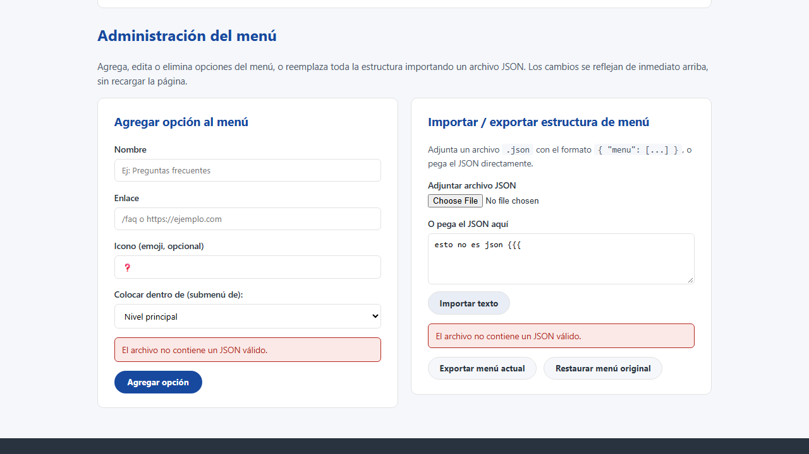
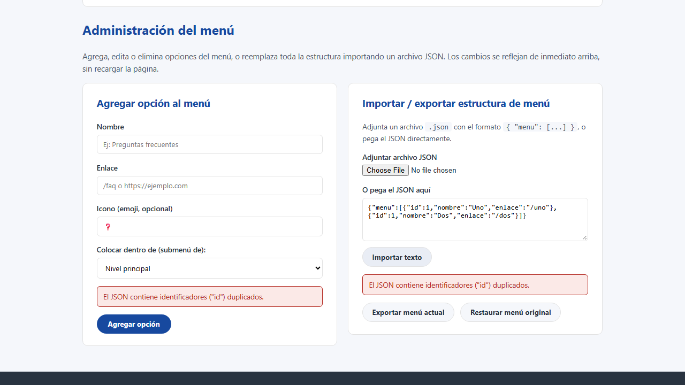
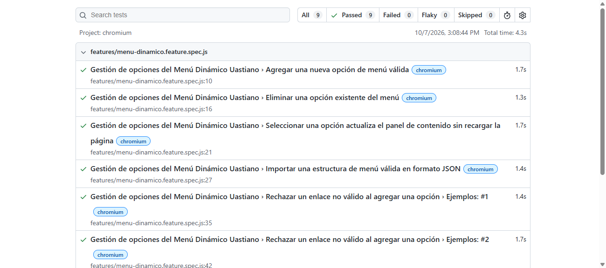

Resumen de ejecución
Herramienta elegida: playwright-bdd, que convierte archivos
.feature en tests nativos de Playwright. Se reutiliza así todo lo ya
construido en la Práctica 5.1 (reportes HTML, capturas automáticas, trazas) pero
describiendo el comportamiento esperado en lenguaje natural (Given/When/Then)
antes de automatizarlo, tal como pide la metodología BDD.
Funcionalidad principal bajo prueba
Gestión de opciones del Menú Dinámico Uastiano: el administrador del sitio puede agregar, eliminar e importar opciones del menú de navegación sin modificar el código fuente, y esos cambios deben reflejarse de inmediato en la interfaz.
| Aplicación bajo prueba |
Menú Dinámico Uastiano (Práctica 4 — Vue 3 + TypeScript) https://ecompute30.github.io/Lab_programacion3_INF5170/P4_MenuDinamico_Vue/dist/ |
|---|---|
| Herramienta BDD | playwright-bdd sobre Playwright + TypeScript |
Archivo features/menu-dinamico.feature
Los escenarios se escribieron en español usando la directiva # language: es de Gherkin.
# language: es
Característica: Gestión de opciones del Menú Dinámico Uastiano
Como administrador del sitio
Quiero agregar, eliminar e importar opciones del menú de navegación
Para mantener actualizada la estructura del sitio sin modificar el código fuente
Antecedentes:
Dado que el usuario está en la página principal del Menú Dinámico Uastiano
Escenario: Agregar una nueva opción de menú válida
Cuando completa el formulario de alta con el nombre "Preguntas Frecuentes" y el enlace "/faq"
Y pulsa el botón "Agregar opción"
Entonces la opción "Preguntas Frecuentes" aparece visible en el menú principal
Escenario: Eliminar una opción existente del menú
Cuando elimina la opción "Tarjetas" del menú
Entonces la opción "Tarjetas" ya no aparece en el menú principal
Escenario: Seleccionar una opción actualiza el panel de contenido sin recargar la página
Cuando selecciona la opción "Inicio" del menú
Entonces el panel de contenido muestra el título "Inicio" y la ruta "/inicio"
Y la dirección del navegador no cambia
Escenario: Importar una estructura de menú válida en formato JSON
Cuando pega en el panel de importación un JSON válido con una única opción llamada "Noticias"
Y pulsa el botón "Importar texto"
Entonces el menú se reemplaza y muestra únicamente la opción "Noticias"
Esquema del escenario: Rechazar un enlace no válido al agregar una opción
Cuando completa el formulario de alta con el nombre "<nombre>" y el enlace "<enlace>"
Y pulsa el botón "Agregar opción"
Entonces se muestra en el formulario un mensaje de error que contiene "El enlace debe ser una ruta interna"
Y la opción "<nombre>" no aparece en el menú
Ejemplos:
| nombre | enlace |
| Enlace malicioso | javascript:alert(1) |
| Enlace con otro esquema | data:text/html,hola |
| Enlace sin barra inicial | sin-barra-inicial |
Escenario: Rechazar la importación de un texto que no es JSON válido
Cuando pega en el panel de importación el texto "esto no es json {{{"
Y pulsa el botón "Importar texto"
Entonces se muestra en el panel de importación un mensaje de error que contiene "no contiene un JSON válido"
Y la opción "Inicio" sigue apareciendo en el menú
Escenario: Rechazar la importación de un JSON con identificadores duplicados
Cuando pega en el panel de importación un JSON con dos opciones que comparten el mismo id
Y pulsa el botón "Importar texto"
Entonces se muestra en el panel de importación un mensaje de error que contiene "identificadores"
Y la opción "Inicio" sigue apareciendo en el menú
¿Qué valida cada escenario?
| # | Escenario | Tipo | Qué valida | Resultado |
|---|---|---|---|---|
| 1 | Agregar una nueva opción de menú válida | Éxito | El flujo principal: completar nombre + enlace válidos y confirmar que la opción se agrega de inmediato al menú visible. | Aprobado |
| 2 | Eliminar una opción existente del menú | Éxito | Que el botón de eliminar quite la opción del menú sin recargar la página. | Aprobado |
| 3 | Seleccionar una opción actualiza el panel de contenido | Éxito | La navegación por el menú es del lado del cliente: cambia el contenido mostrado y la URL del navegador permanece igual. | Aprobado |
| 4 | Importar una estructura de menú válida en JSON | Éxito | Un JSON bien formado reemplaza por completo la estructura del menú. | Aprobado |
| 5 | Rechazar un enlace no válido (esquema outline, 3 ejemplos) | Error | Tres variantes de enlaces inválidos (javascript:, data:, sin barra inicial) son rechazadas con el mismo mensaje de validación, y la opción nunca se agrega. |
Aprobado (×3) |
| 6 | Rechazar un texto que no es JSON válido | Error | Pegar un texto mal formado en el importador muestra un error de parseo y no altera el menú existente. | Aprobado |
| 7 | Rechazar un JSON con identificadores duplicados | Error | Un JSON estructuralmente válido pero con id repetidos es rechazado por la validación de unicidad, sin alterar el menú existente. |
Aprobado |
Evidencia de ejecución
Capturas tomadas automáticamente por Playwright al finalizar cada escenario:








Salida de consola de la ejecución completa (npm test, que corre bddgen + playwright test):
Running 9 tests using 6 workers ✓ Agregar una nueva opción de menú válida (1.2s) ✓ Eliminar una opción existente del menú (1.3s) ✓ Importar una estructura de menú válida en formato JSON (1.3s) ✓ Rechazar un enlace no válido al agregar una opción › Ejemplos: #1 (1.4s) ✓ Rechazar un enlace no válido al agregar una opción › Ejemplos: #2 (1.6s) ✓ Seleccionar una opción actualiza el panel de contenido sin recargar la página (1.9s) ✓ Rechazar un enlace no válido al agregar una opción › Ejemplos: #3 (1.4s) ✓ Rechazar la importación de un texto que no es JSON válido (1.1s) ✓ Rechazar la importación de un JSON con identificadores duplicados (1.4s) 9 passed (5.5s)
Cómo reproducir esta suite
git clone https://github.com/ecompute30/Lab_programacion3_INF5170.git cd Lab_programacion3_INF5170/P52_PruebasBDD_Gherkin npm install npx playwright install chromium npm test # genera los tests desde los .feature y los ejecuta npm run report # abre el reporte HTML interactivo